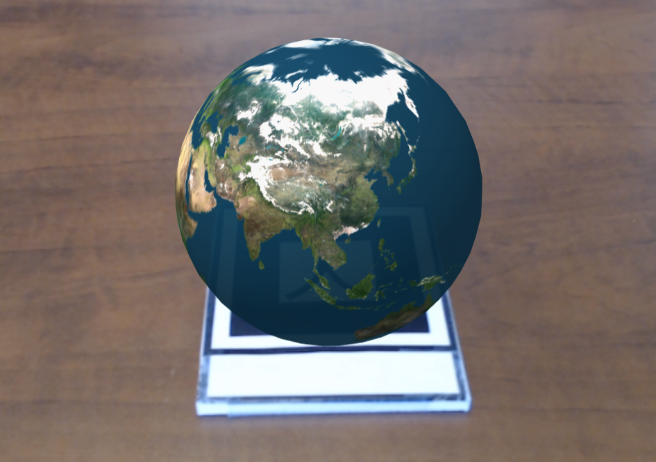
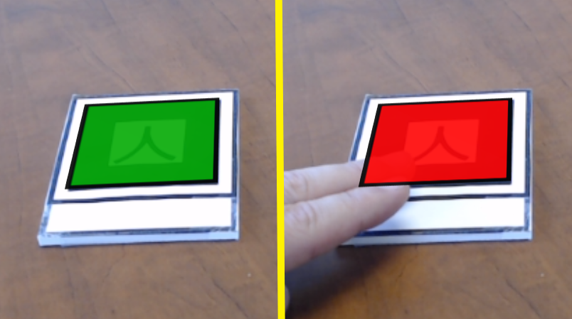

A basic scene that places plain and textured shapes on markers (kanji, barcodes 0/1/2).
markers directory in this repository. Requires the kanji marker unless otherwise specified.
|
Hello, AR World!
A basic scene that places plain and textured shapes on markers (kanji, barcodes 0/1/2). |
| 3D model
A single gltf model attached to a marker. |
 |
Multi-Textured Cube
A cube with different images on each side, attached to a marker. |
 |
Animation
Animating (rotating) a globe attached to a marker, using the built-in animation component. |
 |
Text (2D and 3D)
Attaching text to the kanji and hiro markers. |
 |
Particle Effects
Creating a particle system effect, attached to a marker.
|
|  | Introduction to Scripting
Rotates a globe attached to a marker, by writing an A-Frame component and modifying the underlying Three.js object. |
 |
Canvas Textures
Using an HTML canvas as the texture for a cube; creating an animation ("bouncing block") on the canvas and updating the cube texture. |
 |
Detection
A cube is attached to a kanji marker. Red, yellow, and blue squares are attached to barcode markers 0, 1, and 2. The color of the cube changes depending on which combination of the markers is visible. |
|  | Persistence and Following
A green square is attached to a marker. If the marker is no longer visible, the square turns red and remains in the last known position of the marker. If the marker then becomes visible again, the square turns green and moves (lerps) to the new position. |
| Flamingo on the marker
nft marker testing on web |
| Dino Sor Marker Less
Hit test Demo |
| Test
Test |